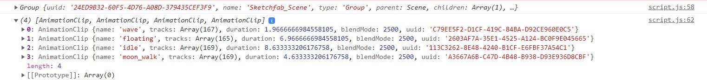

THREE.JS
Created by Gruchenkova Evgenia
Content
Введение в 3D
WebGL – это программная библиотека для JavaScript, которая позволяет создавать 3D графику, функционирующую в браузерах.
WebGL использует объект canvas.
Работа с WebGL — это довольно трудоемкий процесс. В процессе разработки необходимо описать каждую точку, линию, грань и так далее.
Для повышения скорости разработки, была разработана библиотека Three.js.
Введение в 3D
Three.js – это библиотека JavaScript, содержащая набор готовых классов для создания и отображения интерактивной 3D графики в WebGL.
See the Pen WebGL Distortion Slider by Ash Thornton (@ashthornton) on CodePen.
See the Pen three.js Earth by Kevin (@qkevinto) on CodePen.
See the Pen TinyPolyWorld - ThreeJS experiements. by Zultan (@Zultan) on CodePen.
Подробнее о THREE.JS
Основные понятия
- Scene
- Camera
- Renderer
Renderer
Рендерер — это инструмент, который отображает сцены прямо в вашем браузере.
Сцена
Сцена — это место, где все происходит.
Камера
Типы камеры в Three.js
- Perspective Camera*
- Stereo Camera
- Orthographic Camera*
- Cube Camera
*cамые распространенные
Perspective Camera
Перспективная камера предназначена для имитации того, что видит человеческий глаз. Камера воспринимает все объекты в перспективной проекции, то есть: чем дальше находится объект от нас, тем он кажется меньше.
Orthographic Camera
В этом режиме проецирования размер объекта в отображаемом изображении остается постоянным, независимо от его расстояния от камеры. Это может быть полезно при отображении 2D-сцен и элементов пользовательского интерфейса.
Параметры камеры
- FOV(Field Of View) - поле зрения
- Near - определяет, где начинается фронт усечения
- Far -определяет, где заканчивается фронт усечения
Т.е FOV определяет угол, который вы можете видеть вокруг центра камеры. Near и Far - минимальное и максимальное расстояние от камеры, попадающей в рендеринг. Таким образом, очень удаленные точки вообще не будут рендериться, как и точки, находящиеся очень близко.
Освещение
Примеры освещения
- Ambient Light
- Directional Light
- Point Light
- Spot Light
Примеры освещения
Ambient Light — фоновое освещение, которое используется для освещения всех объектов сцены одинаково. Нельзя использовать для создания теней, так как у него нет направления.
Примеры освещения
Ambient Light — фоновое освещение, которое используется для освещения всех объектов сцены одинаково. Нельзя использовать для создания теней, так как у него нет направления.
Примеры освещения
Directional Light — свет, который излучается в определенном направлении. Он может отбрасывать тени, так как направлен на конкретный объект.
Примеры освещения
Directional Light — свет, который излучается в определенном направлении. Он может отбрасывать тени, так как направлен на конкретный объект.
Примеры освещения
Point Light — свет, который излучается из одной точки во всех направлениях.
Примеры освещения
Point Light — свет, который излучается из одной точки во всех направлениях.
Примеры освещения
Spot Light — данный свет излучается из одной точки в одном направлении, вдоль конуса, расширяемого по мере удаления от источника света.
Примеры освещения
Spot Light — данный свет излучается из одной точки в одном направлении, вдоль конуса, расширяемого по мере удаления от источника света.
Пример кода
Создание объектов на сцене
Создание объектов на сцене
Mesh — это класс, представляющий объекты на основе треугольной полигональной сетки.
Создание объектов на сцене
Mesh — это класс, представляющий объекты на основе треугольной полигональной сетки.
Полигональная сетка — это совокупность вершин, рёбер и граней, которые определяют форму многогранного объекта в трёхмерной компьютерной графике и объёмном моделировании.
Создание объектов на сцене
Mesh — это класс, представляющий объекты на основе треугольной полигональной сетки.
Полигональная сетка — это совокупность вершин, рёбер и граней, которые определяют форму многогранного объекта в трёхмерной компьютерной графике и объёмном моделировании.
Класс Mesh
Класс Mesh
- Состоит из 2-ух объектов:
Класс Mesh
- Состоит из 2-ух объектов:
- Geometry — описывает форму (положения вершин, грани, радиус и т.д)
Класс Mesh
- Состоит из 2-ух объектов:
- Geometry — описывает форму (положения вершин, грани, радиус и т.д)
- Material — описывает внешний вид объектов (цвет, текстура, прозрачность и т.д.)
Mesh
Чтобы применить материал к геометрии, используется сетка. Это принимает форму и добавляет указанный материал к каждой грани.
Geometry
Geometry
See the Pen BoxGeometry - Three.js by Gruchenkova (@gruchenkova) on CodePen.
Geometry
See the Pen SphereGeometry - Three.js by Gruchenkova (@gruchenkova) on CodePen.
Geometry
See the Pen ConeGeometry - Three.js by Bret Cameron (@BretCameron) on CodePen.
Geometry
See the Pen TorusKnotGeometry - Three.js by Gruchenkova (@gruchenkova) on CodePen.
Material
Материал — это то, что покрывает объект, цвета или текстуры на его поверхности.
MeshBasicMaterial
Если вы хотите, чтобы ваш объект имел однородный цвет, вы можете использовать MeshBasicMaterial, так как на него не влияет свет.
See the Pen MeshBasicMaterial - Three.js by Bret Cameron (@BretCameron) on CodePen.
MeshLambertMaterial
Материал на который воздействует свет, поэтому, чтобы увидеть, что мы делаем, нам нужно добавить немного света в сцену.
See the Pen MeshLambertMaterial - Three.js by Bret Cameron (@BretCameron) on CodePen.
MeshPhongMaterial
Позволяет достичь высокого уровня качества изображения
See the Pen MeshPhongMaterial - Three.js by Bret Cameron (@BretCameron) on CodePen.
Loader
Three.js имеет множество поддерживаемых загрузчиков, охватывающих большинство основных форматов 3D-файлов.
Loader
Пример
See the Pen Three.js - Load .GLTF by Shubham Tiwari (@sktiwari) on CodePen.
Текстуры
Текстура — растровое изображение, накладываемое на поверхность полигональной модели для придания ей цвета, окраски или иллюзии рельефа.
Текстуры
Текстуры
Рассеянная текстура - задает основной цвет поверхности
Текстуры
Текстура Bump Map - текстура позволяет показать рельеф.
Текстуры
Текстура Bump Map - текстура позволяет показать рельеф.
Текстуры
See the Pen Earth (three.js) by shadrina (@shadrina) on CodePen.
Анимация
See the Pen Space globe - Three.js by isladjan (@isladjan) on CodePen.
Архитектура анимации three.js
Animation Clips
Animation Mixer
Animation Actions
Настройкой AnimationAction можно определять когда конкретный AnimationClip будет воспроизводиться, устанавливаться в паузу, останавливать или запускать анимацию